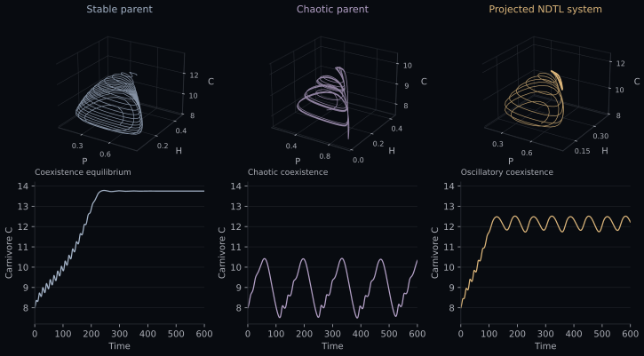
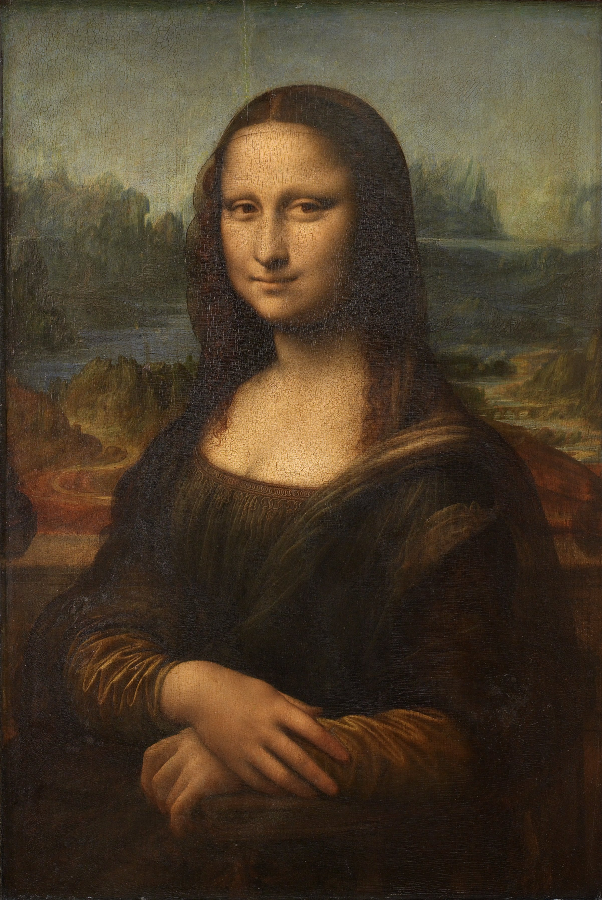
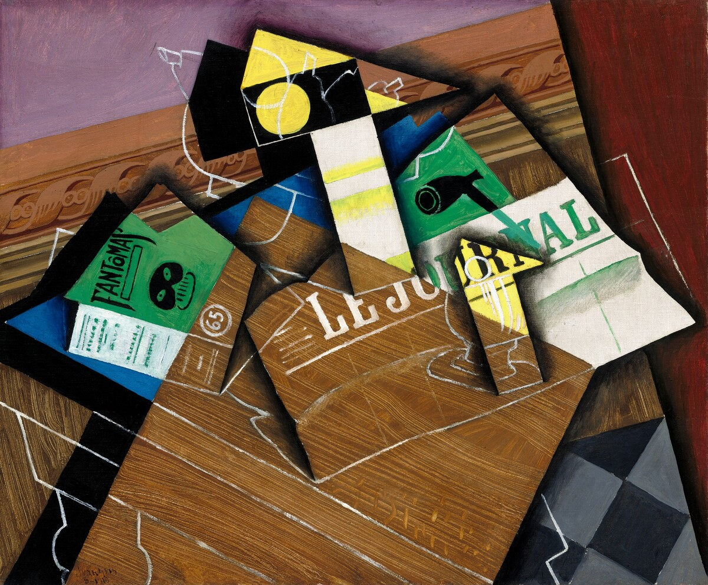
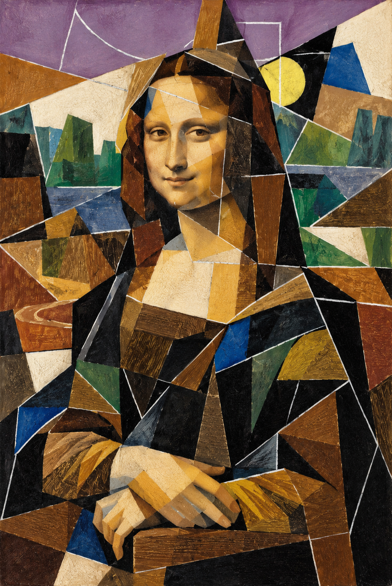
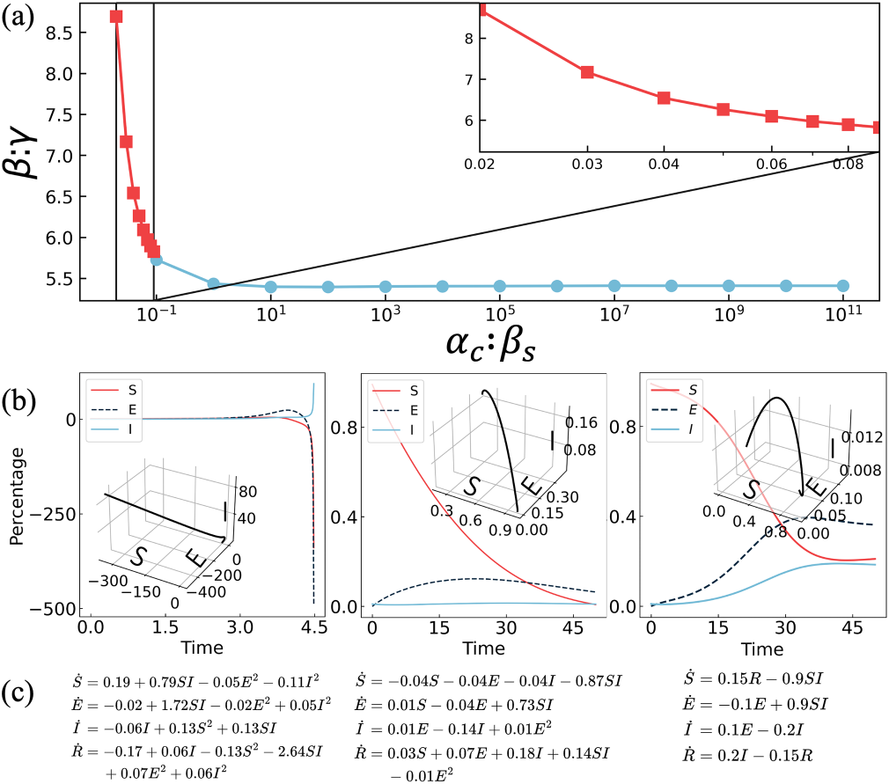
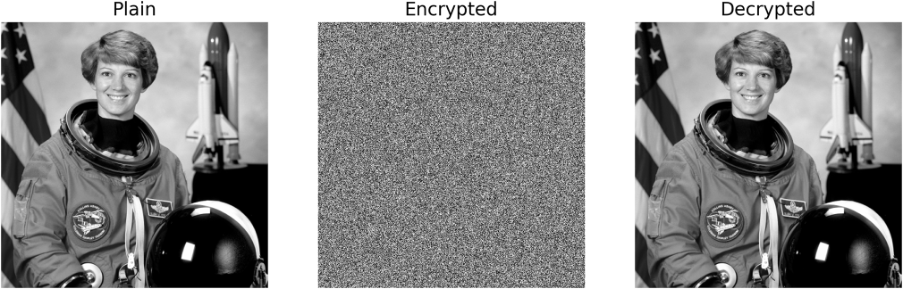

Ecology / HP model
Oscillatory
coexistence.
Equilibrium + chaos → a persistent cycle.

Neural dynamical transfer learning
Transfer features.
Create dynamics.
01 / Motivation



What if we combined
dynamical systems?↓
02 / Fusion
03 / Classification
Spectral coordinates · similarity potential, not physical energy · interpolated surface
1,326 paths → distances → affinity → clusters
Each pair contributes one fusion-path dissimilarity. All 1,326 values define the affinity matrix used for clustering and spectral embedding. U = −log(mean affinity to the other 51 systems). Selecting a pair highlights two systems in this fixed global landscape.
Path deviation, roughness, endpoint gaps and chaos loss enter the distance with equal weight after percentile ranking. Failed evaluations remain gaps. The surface interpolates the measured system heights for display.
Landscape data ↓ · Sec. IV & Appendix E ↗04 / Applications
Ecology / HP model
Equilibrium + chaos → a persistent cycle.



05 / Method
α Lc,A + β Lc,B
α Lc,A + β Ls,B
Content / Style
Input layer · Gram unchanged under F → −F
10 seeds · mean & interquartile range